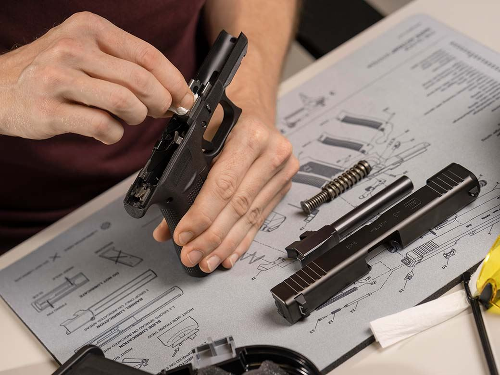
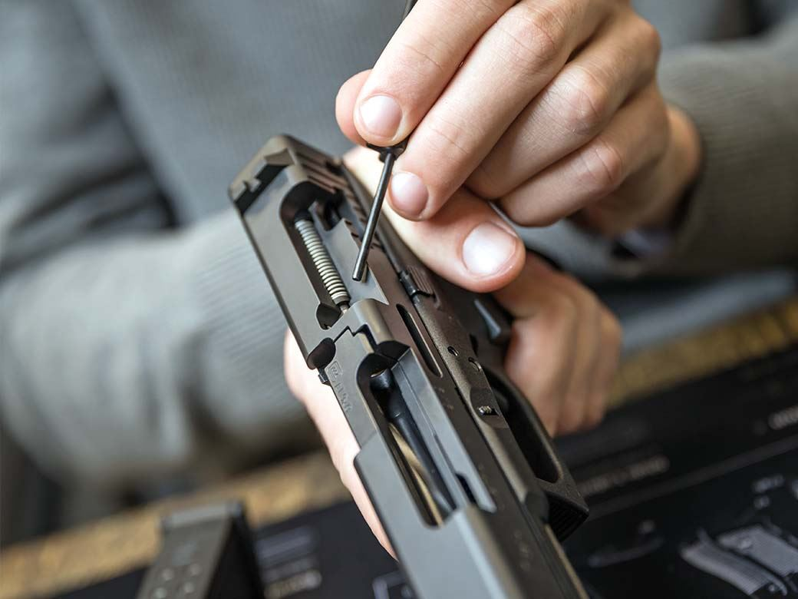
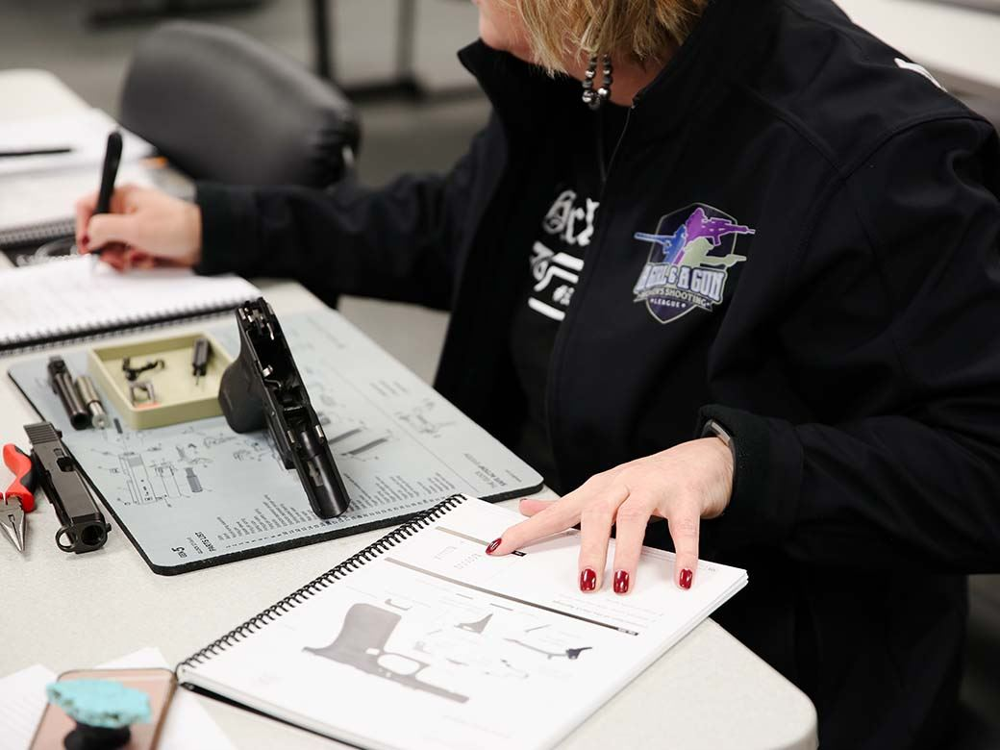
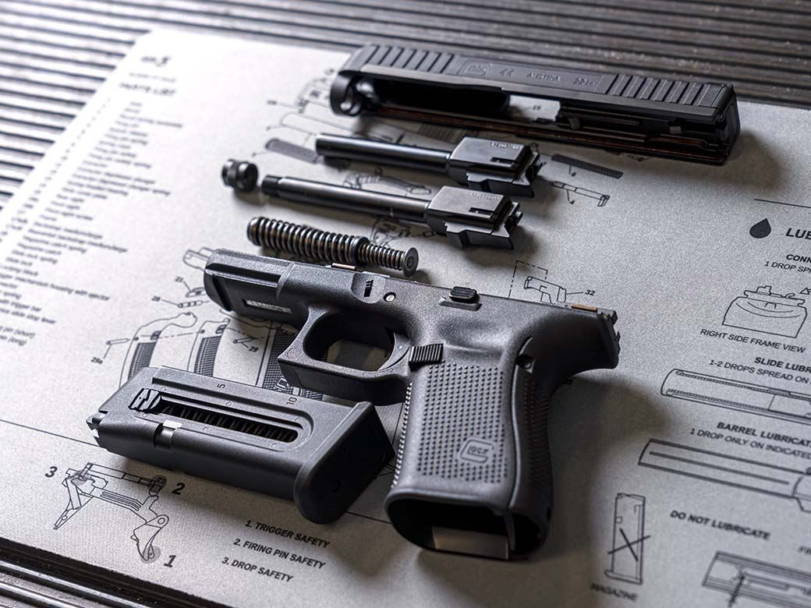

The GLOCK Training department provides professional training to Law Enforcement, Military who desire to utilize the GLOCK Safe Action® System to its maximum potential. GLOCK pistols are used by many Law Enforcement/Military agencies around the world and these classes are held internationally. Courses include both classroom and live-fire range training. Please note: These courses do not certify anyone as a firearms instructor and graduates cannot teach other GLOCK Training factory classes. GLOCK Training reserves the right to remove students from classes and/or permanent ban from future training due to violation(s) of firearms safety rules with no refund of class fees.
GLOCK Training Department
ATTN.: Officials only! These courses are available for Law Enforcement and Military personnel only. These courses cannot be booked by the public.
info@domain.comBecome a certified GLOCK Amorer through learning safe disassembly, inspection, maintenance and reassembly of all GLOCK Pistols.
   